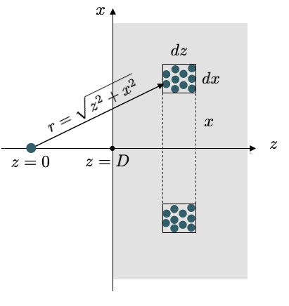
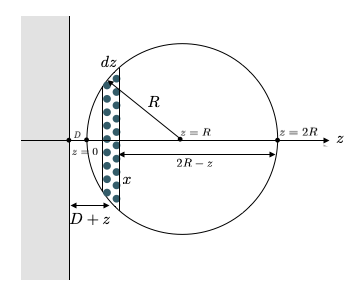

van der Waals Interaction
Contents
This page was generated from notebooks/L11/1_van_der_Waals.ipynb.

van der Waals Interaction#
The semiclassical theory we have developed in the last lecture can also be extended to objects and bodies which are embedded in media. We therefore consider a spherical particle of radius \(a_i\) of dielectric constant \(\epsilon_i\) in a mediums of dielectric constant \(\epsilon\). If an external electric field is applied, that the particle is polarized to obtain a dipole
\begin{equation} u_{\rm ind}=4\pi \epsilon_0 \epsilon \frac{\epsilon_i-\epsilon}{\epsilon_i+2\epsilon}a_i^3E \end{equation}
This result is obtained as the spheres polarization is also influenced by the electric field generated in the medium around the sphere. This local electric field that is relevant has been considered by Clausius and Mossotti.
According to \(u_{\rm ind}=\alpha E\), we readily obtain the polarizability
\begin{equation} \alpha(\nu)=4\pi \epsilon_0 \epsilon_3(\nu)\frac{\epsilon_1(\nu)-\epsilon_3(\nu)}{\epsilon_1(\nu)+2\epsilon_3(\nu)}a_1^3 \end{equation}
This result shows that the dielectric function of the particle \(\epsilon_1\) needs to be different from the environment to obtain a contribution, which justifies the name excess polarizability.
Using this polarizability, we can write down the the van der Waals interaction energy by McLachlan as
Zero Frequency
\begin{equation} w(r)=-\frac{3k_B T a_{1}^3a_2^3}{r^6}\left ( \frac{\epsilon_1(0)-\epsilon_3(0)}{\epsilon_1(0)+2\epsilon_3(0)}\right )\left ( \frac{\epsilon_2(0)-\epsilon_3(0)}{\epsilon_2(0)+2\epsilon_3(0)}\right ) \end{equation}
and at
Optical Frequencies
\begin{equation} w(r)=-\frac{3h a_{1}^3a_2^3}{\pi r^6}\int_{\nu_1}^\infty\left ( \frac{\epsilon_1(i\nu)-\epsilon_3(i\nu)}{\epsilon_1(i\nu)+2\epsilon_3(i\nu)}\right )\left ( \frac{\epsilon_2(i\nu)-\epsilon_3(i\nu)}{\epsilon_2(i\nu)+2\epsilon_3(i\nu)}\right )d\nu \end{equation}
To calculate the interaction energy we therefore need to know the dielectric function over the whole frequency range, which is often not easily accessible. Yet, if there is a strong absorption of the material at \(\nu_e\) then the dielectric function can be written as
which can be inserted and integrated in the above equations as a replacement.
van der Waals interactions
Overall the van der Waals interactions have the following general properties
since \(h\nu_e >>k_B T\) the dispersion interaction is much bigger that the rest of the interaction. For \(\epsilon=n^2\approx 2\), and \(\nu_e=3\times 10^{15}\) s\(^{-1}\) we find \(h\nu_e/2\sqrt{3}k_B T\approx 140\)
the van der Waals interaction is greatly reduced in a solvent as compared to vacuum. For \(n_1=n_2=1.5\) and \(n_3=1.4\) we obtain a factor of 32 as compared to \(n_3=1\)
the van der Waals force between like molecules is always attractive. The dispersion part can be repulsive, however, if \(n_3\) is between \(n_1\) and \(n_2\)
the van der Waals interaction is not additive
the dispersion interaction shows retardation effects, at distances larger than \(100\) nm, it decays with \(r^{-7}\)
Interaction Between Macroscopic Bodies#
The above equations, that we derived before are essentially valid between small objects at distances larger than their size. If objects become macroscopic, we have to consider the interaction of all components of a body with all components of the second body. To calculate those interactions, we will assume that all interactions are additive, while we know that this is not completely true for van der Waals forces.
Our general law of interaction shall be
where \(C\) is the interaction constant, which comprises all additional constants in the interaction law.
a) a single molecule in front of a wall
According to the image above we see that the single molecule interacts with all molecules in a tiny volume element at a distance \(r=\sqrt{x^2+y^2}\) in the same way. This cylindral volume is given by
and contains, based on the number density \(\rho\) of molecules in the wall and amount of \(2\pi x dx dz\rho\) molecules. We then only have to sum up all contributions of shells with different \(x\) and different \(z\) which readily yields
\begin{eqnarray} w(D)&=&-2\pi C\rho\int_z=D^{\infty} dz \int_{x=0}^{\infty}\frac{x dx}{(z^2+x^2)^(n/2)}=-\frac{2\pi C \rho}{n-2}\int_{D}^{\infty}\frac{dz}{z^{n-2}}\\ &=&-\frac{2\pi C \rho}{(n-2)(n-3)D^{n-3}}\; \forall\; n>3 \end{eqnarray}
Thus, if we would use the van der Waals interaction with \(n=6\) we obtain
\begin{equation} w(D)=-\frac{\pi C \rho}{6D^3} \end{equation}
which decays much weaker than the original power law of the van der Waals interaction law. This is a very general results, that the interactions law, which were obtained for point-like objects turn now into distance dependences that are more complex due to the extended shape of macroscopic bodies.
b) Interaction of a sphere with a wall
If we now turn now to a sphere in front of a wall, we have to add up all contributions of molecules in the sphere, which are at a certain distance \(D\). Each of these molecules contributes according to a), so we have to add interactions of slices of the sphere, which are at a distance \(D+z\).
According to the figure, the radius of the slices is given by
which gives a volume of the slice, which is \(\pi x^2 dz=\pi (2R-z)z dz\) that finally gives the number of molecules \(\rho \pi (2R-z)dz\) with \(\rho\) being the number density of wall and sphere. Summing now up over all slices at a distance \(z\) results in
\begin{equation} w(D)=-\frac{2\pi^2 C \rho^2}{(n-2)(n-3)}\int_0^{2R}\frac{(2R-z)zdz}{(D+z)^{n-3}} \end{equation}
This results can be considered in different limits.
For \(D\ll R\) we have mainly contributions from \(z\approx D\), which yield then
\begin{equation} w(D)=-\frac{4\pi^2 C \rho^2 R}{(n-2)(n-3)(n-4)(n-5)D^{n-5}} \end{equation}
which would give for van der Waals interactions
\begin{equation} w(D)=-\frac{\pi^2 C \rho^2 R}{6D} \end{equation}
which reveals a much weaker distance dependence than the original formula for the van der Waals interaction. This is again a general result for the interaction for the interaction of bodies at small distances.
If the seperation of sphere and wall is much larger than the sphere itself \(D\gg R\), we can approximate the above integral with
\begin{equation} w(D)=-\frac{2\pi C \rho (4\pi R^3 \rho/3 )}{(n-2)(n-3)D^{n-3}} \end{equation}